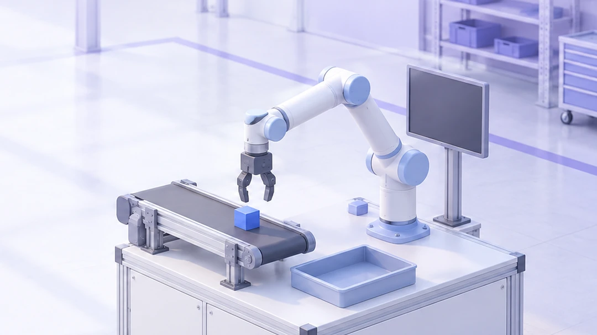
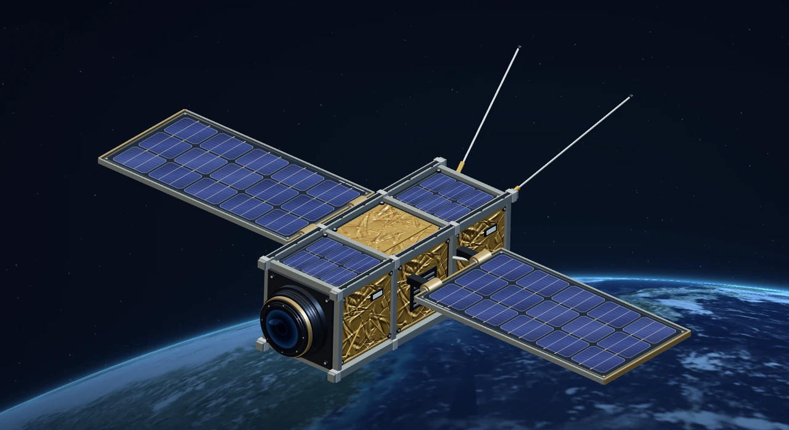
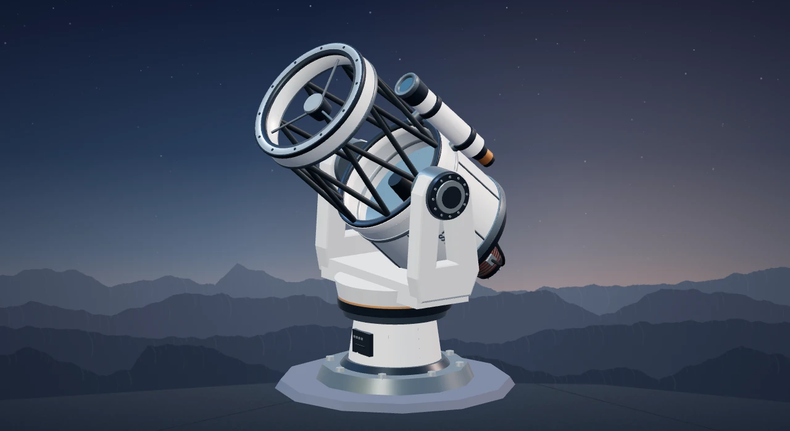
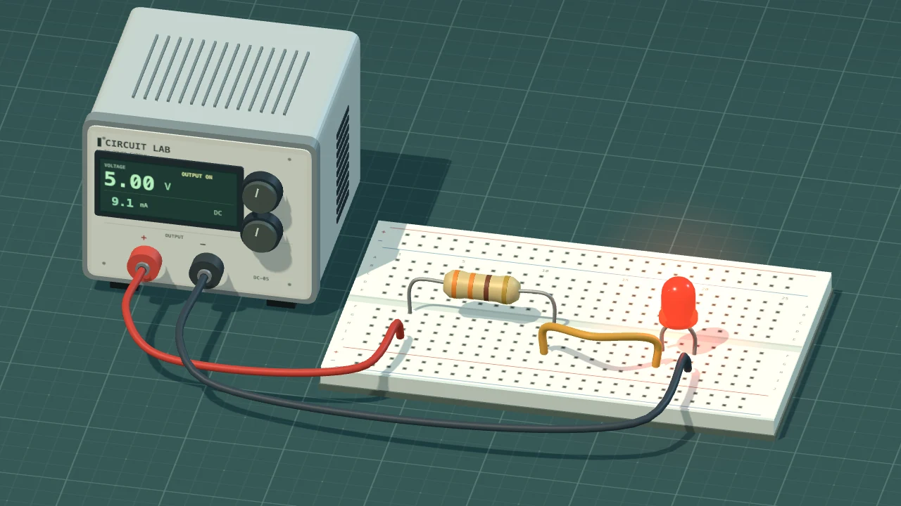

场景教学实验室
选择一项工程任务，探索三维模型，再用实验结果完成自己的设计或观测记录。

机器人与智能制造
机械臂的第一次抓取
把蓝色零件从拾取区送到目标托盘。先观察六轴机械臂怎样运动，再为抓取和放置安排顺序。
45–60 分钟英文课程
进入场景
航天与对地观测
CubeSat 的首次对地观测
让「观澜一号」拍下湖区影像。拆看卫星组件，比较日照与地影中的电量，再安排拍摄与下传。
约 25 分钟中文课程
进入场景
天文与空间环境
用望远镜寻找空间碎片
在山顶观测站值班。探索望远镜、比较长短曝光，找出三张星图里值得复查的移动光点。
约 20 分钟中文课程
进入场景
电子与电路设计
点亮第一盏 LED
在面包板上搭建指示灯。辨认 LED 极性，接通串联回路，再挑选电阻，让电流落在设计范围内。
约 20 分钟中文课程
进入场景